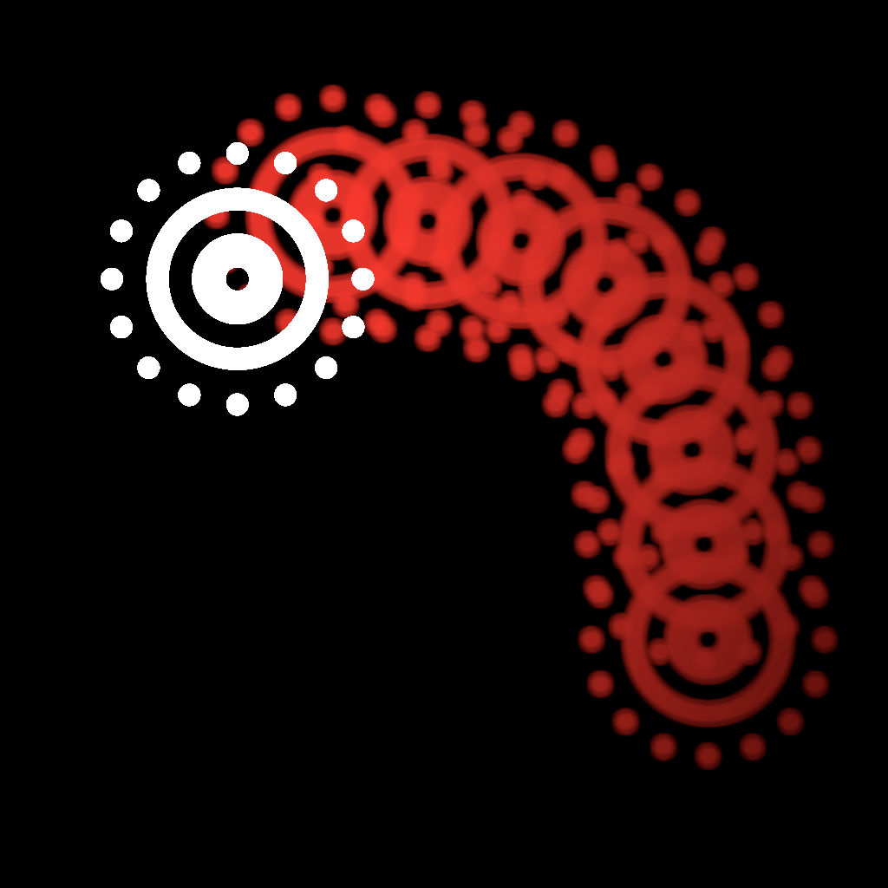
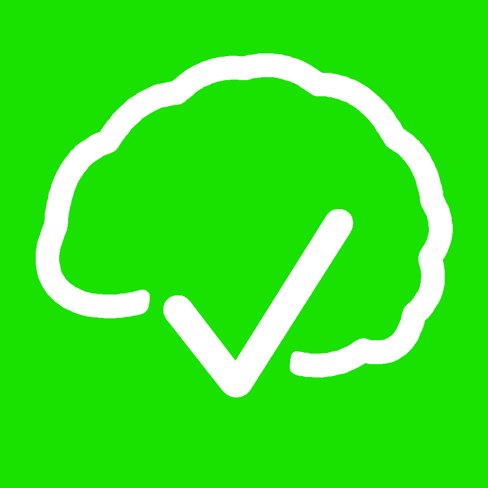
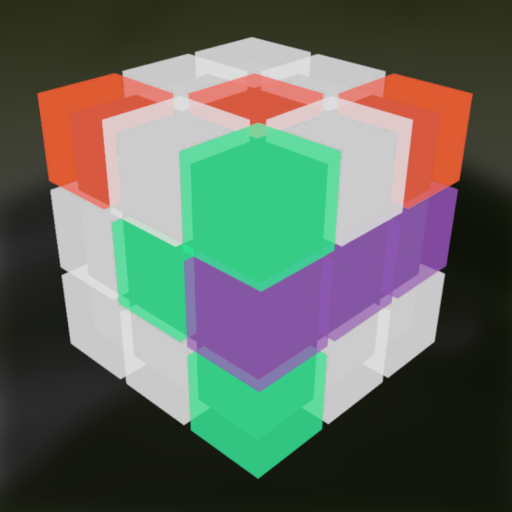
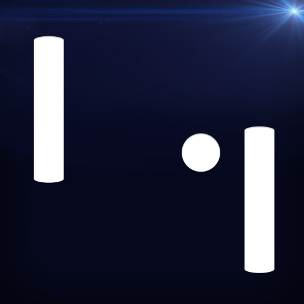

My Experiences:
WWDC20
Link to my 2020 Playground2020 was an interesting year. The COVID-19 pandemic changed everything. One of the small changes was the
renaming of #WWDCScholars to #SwiftStudentChallenge. The bigger change was that the entire WWDC would be
hosted as an online-only event. For that reason (and because I was busy writing my bachelor's thesis), I did
not put as much work into my playground as in my previous submissions.
However, I didn't want to just give up, especially knowing and supporting the entire community that formed around
this event. So, I gave myself 24 hours right when they announced #WWDC20. Within this time I came up with
the idea to make a little 2D SpriteKit game about my favorite TV show, Community. I used some third-party
assets and put it all together nicely to create a 2-minute interactive experience. At the end I wrote my
essays and submitted everything in time. That was the earliest I have ever submitted a WWDCScholars
submission.
As expected, my work was too quick & dirty to receive special attention. That makes me happy, because it
proves (at least to me) that Apple's judgment process is working and fair (contrary to what others have
claimed).
Since I am finishing my studies, #WWDC20 will probably be the last time I submitted a student submission. I
did have a lot of fun and I'm sure that I will cherish all the experiences I was able to make for the rest
of my life.
WWDC19
Link to my 2019 PlaygroundBookBy now I've been quite active in the WWDCScholars community.
It felt so good getting Slack and Telegram notification from all those WWDC groups again, which all have
been pretty silent for almost a year now...
(Btw, since 2019 there exists a new OFFICIAL WWDCScholars Discord Server! For more information contact me or anyone
else from the WWDCScholars Team) ..And as soon as Apple announced WWDC19, I too began to think about
participating.
I ended up with an idea that I got from a "Formal Languages and Automata" lecture I had at university.
The thing that impressed me the most was the fact that with a few basic operations you could calculate
virtually everything!
So I decided to create my own programing-language which would only use emoji and, as said, just a few basic
operations, because why not? :D
The name of this language is: DubDubMachine and you can also find the specs on esolangs.org
Sadly (and due to a record-breaking number of incredible [...] submissions
), my PlaygroundsBook
wasn't accepted for a scholarship this year...
However, I had a blast enjoying the Keynote and especially trying out new stuff with SwiftUI and I already
have plans to use it in my next projects.
Also, as many other scholars put it:
This year showed me how special the WWDC really is and what an immense privilege it is to be invited
there.
I will definitely not give up now and couldn't be more exited about #WWDC20
WWDC18
Link to my 2018 PlaygroundBookAfter I had such an awesome experience last year, I couldn't have been more exited when I saw Apple's
announcement for WWDC18. Once again, I worked hard, while being enrolled in a full-time study
program, to apply for a scholarship.
So, I again had the great privilege to join 350 as-amazing scholars from all over the world for one week
in San José. Not only that, but this time, right at the start we had the honor to visit the Steve Jobs
Theater right next to Park! It was breathtaking. Everything is designed perfectly, just as you
would it expect from a company like Apple™.
The conference itself was no less exciting. With macOS dark mode, ARKit 2.0 and CreateML and so much more
stuff it was a very awesome week.
Being there for the second time now, I was able to get much more out of it than last time. In fact, the
motivational boost I received after dubDub continued for some time, which made me continue working on
private projects...
Of course I also met many fellow developers, including Frederik Riedel, Amanda Southworth and Felix Krause.
The World Wide Developer Conference always is a unique experience and I'm very glad I've been a
part of that.
HUGO BOSS AG
After graduating from High School in winter 2017, I joined an integrated degree program (lit. "dual-study") at HUGO
BOSS.
It took me some time to get used to working within a big company and all organizational matters, especially
getting used to sharing my code, keyword: Git.
It also helped me to grow personally. Living alone (finally) and making my own money, consequently: Being
entirely self-responsible.
I enjoyed working at HUGO BOSS very much and in my opinion it's a great company to work for and with. Having
a beautiful big headquarters in Metzingen, Germany with many, friendly co-workers who all are ready to help
and collaborate.
WWDC17
Link to my 2017 PlaygroundBookIt was my greatest honor to be invited to join ∼5000 other developers and software engineers at
WWDC17.
It was the first time I worked with Playgrounds on a real project and it was both fun and exhausting to
'write' my PlaygroundBook. And it was even harder, given that I was about to graduate from high school and
that my finals started a few days after the deadline for application.
I cannot say in words how HYPED I was, nor the hight that I was jumping, when I finally received that
email for the first time in my life.
The conference helped me a lot to have a deeper understanding of Swift and it got me into some very cool new
APIs which would be important for my further career. Furthermore, it really did a great job in connecting me
with other developers, even within my area. I got to know one of the founders of the #WWDCScholars: Sam
Eckert and a some other Apple enthusiasts. One of them eventually tuned out to be my future fellow
student.
Tech. Gymnasium Schwäbisch Gmünd
After taking an 'ordinary' school career for almost 10 years, I made the choice to do something new. So, I
switched schools and spent my final 3 high school years studying computer science, programming and
digital engineering. I eventually graduated in April 2017.
This gave me a very strong knowledge base in the field of computer science that I would need later on in my life.
KomaNet GmbH

The very first Internship I had, was back in 2012. It was an IT-Company which also was an authorized reseller
of Apple™ products.
I really enjoyed it and it increased my interest in technology.
More Information HERE.
My Work:
seximal
Inspired by jan Misali I made an
app that showcases the seximal (or senary, heximal, base-six)
numbering system. It gives you a glimpse into a decimal seximal world. To learn more about seximal
visit seximal.net
(Initial release: 01/2021)

AvoidAR
A friend gave me the idea of creating a game, which's feature it is to keep your finger on the touchscreen
for as long as possible. A few moments later I started to create a game where you need to dodge obstacles
flying toward you in Augmented Reality (also using 3D-Touch). Lifting your finger means Game Over!
(Initial release: 01/2021)
ToDo-pamine
This app was inspired by the YouTube video I Built a
Dopamine Box.
Creating a daily to-do list (even if it only has mundane tasks) can increase dopamine production and thus overall
productivity. I felt that I could do that by providing an alternative to the default iOS Reminders.app, to maximize
productivity. The result is my first ever published SwiftUI app.
(Initial release: 11/2020)
(TicTacToe)³
This is one of the very first 3D AR Multiplayer experiences on the AppStore™. Combining the classic
TicTacToe with the newest technologies, creating an outstanding game for you and your friends.
(Initial release: 09/2018)
Pong Adventure
This is my fist App which is available on the AppStore™. It isn't highly complex, but
I developed this App entirely by myself and am very proud that it made it into the store!
(Initial release: 2014)